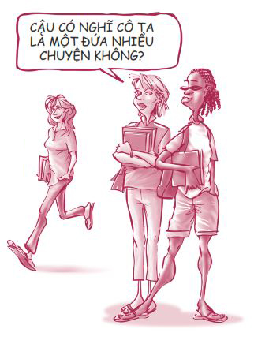
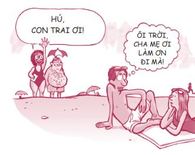
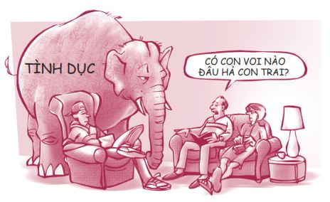
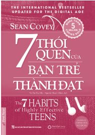

Bạn có thể đọc quyển sách này theo nhiều cách khác nhau: đọc từ đầu đến cuối (có lẽ là cách tốt nhất), hoặc chỉ chọn đọc những chương bạn thích nhất. Nếu quá lười, bạn có thể chỉ cần xem tranh minh họa thôi cũng được. Tôi xin khái quát nội dung các chương như sau:
1. CHUYỆN HỌC HÀNH - “Tôi hoàn toàn kiệt sức!”
Trong tất cả các thách thức bạn gặp phải, việc học hành chiếm vị trí đầu tiên. Tại sao ư? Vì nó khiến ta bị stress! Một bạn trẻ tâm sự: “Chuyện học hành... Ôi! Mọi người cứ tạo áp lực cho học sinh rằng việc học hành là tất cả và điều đó khiến tôi bị stress!”.
Bạn phải đối mặt với những chuyện ngồi lê đôi mách và điểm số, thầy cô và các bài kiểm tra, các biệt danh và nhân viên căng-tin. Trời ạ! Bạn phải đương đầu với những bậc phụ huynh luôn kỳ vọng bạn phải học thật giỏi. Trên tất cả, bạn phải lo lắng về việc chuẩn bị để có một công việc tốt trong tương lai.
Vì sao lựa chọn của bạn trong việc học hành lại là một quyết định lớn đến vậy? Có thể bởi vì lựa chọn ấy sẽ mở ra hoặc đóng sầm những cánh cửa cơ hội của bạn trong dài hạn.
Trong chương bàn về chuyện học hành, chúng ta sẽ đề cập đến nhiều chủ đề quan trọng như:
• Việc bỏ học hủy hoại tiềm năng kiếm tiền của bạn như thế nào
• Cách tạo động lực cho bản thân khi bạn chẳng có tí động lực nào
• Bảy bí quyết giúp bạn đạt được điểm cao
• Khắc phục khiếm khuyết về khả năng học tập
• Chuẩn bị để vào đại học và việc chi trả học phí đại học
• Tìm hướng đi riêng (chúng ta sẽ bàn về việc tìm xem sở trường của bạn là gì)
2. BẠN BÈ - “Thật vui... nhưng cũng thật rắc rối!”
Một số bạn trẻ cảm thấy việc tìm và kết giao với bạn tốt khá dễ dàng. Nhưng với nhiều bạn trẻ khác thì việc đó thật khó khăn. Chúng ta không hòa nhập được với tập thể hoặc chúng ta bị phán xét bởi vì không có được cơ thể hoàn hảo hay ăn mặc không đúng mốt. Mọi việc đặc biệt khó khăn khi gia đình bạn phải chuyển nhà và bất thình lình bạn trở thành “ma mới”, phải cố gắng hết sức để được gia nhập vào các nhóm bạn đã chơi với nhau từ lâu. Nhiều người trong chúng ta đã từng trải qua những khoảng thời gian mà bản thân chẳng có lấy một đứa bạn nào. Hoặc khi nhu cầu được chấp nhận của chúng ta lớn đến nỗi chúng ta đồng ý kết bạn với bất kỳ ai sẵn lòng chấp nhận mình, mặc cho họ rất thiếu tôn trọng trong cách cư xử với ta.

Và còn cả những chuyện thị phi nữa. Thật kỳ cục khi gần như mọi cô gái mà tôi từng nói chuyện cùng đều nói với tôi rằng: “Hai đứa con gái chơi với nhau thì khá ổn, nhưng hễ có đứa thứ ba là hỏng bét ngay”. Bọn con trai chúng tôi thì có những kiểu thách thức khác, chẳng hạn như đánh nhau hay giành giật bạn gái với nhau.
Việc chọn bạn để chơi và chọn bản thân sẽ trở thành một người bạn như thế nào là một quyết định lớn. Trong chương này chúng ta sẽ bàn nhiều về những vấn đề thú vị như:
• Sống sót được trong trò cạnh tranh sự nổi tiếng
• Làm gì khi bạn chẳng có người bạn nào
• Hãy trở thành kiểu bạn bè mà bản thân mình muốn có
• Sống sót qua các cuộc chiến của hội chị em
• Những điều cần biết về các băng đảng
• Đứng vững trước áp lực bạn bè
3. MỐI QUAN HỆ VỚI CHA MẸ - “Thật xấu hổ!”
“Mẹ tôi thì tạm ổn. Bà luôn cố gắng để hiểu tôi. Nhưng hình như càng cố, bà lại càng khiến tôi thấy phiền hơn. Còn cha tôi thì thật điên rồ. Tôi không sao hiểu nổi được ông ấy.”
Đó là lời tâm sự của Sabrina. Cô bạn này khá bình thường. Cô cũng yêu quý cha mẹ của mình nhưng không phải lúc nào cô cũng hiểu được họ. Một phần các vấn đề nảy sinh liên quan đến các bậc phụ huynh nằm ở cách chúng ta nhìn nhận họ. Thời tôi còn học tiểu học, tôi thấy cha mẹ tôi thật ngầu. Nhưng khi tôi bước sang tuổi mười ba, tôi lại thấy họ bỗng trở nên hết sức quê mùa và luôn khiến tôi bẽ mặt. Bỗng nhiên họ như quên mất cách ăn mặc, nói năng và đi đứng ngay thẳng. Tôi sẽ chẳng bao giờ quên được hồi học lớp Tám, khi tôi đang đứng trên đường biên giữa một trận bóng bầu dục thì có ai đó vỗ vai mình.
“Ê Sean. Cha nè. Con với mấy đứa bạn con có muốn ăn một miếng không?”
Tôi bị sốc khi thấy cha tôi đứng trên đường biên, nơi đáng lý ra cha không được phép vào, tay cầm một cái pizza to đùng, hỏi liệu tôi có muốn miếng pizza thấy ghê đó không, trong khi trận bóng của tôi đang diễn ra.
Tôi khó chịu vô cùng. Thế là trước mặt các đồng đội của mình, tôi đã vờ như chẳng hề quen biết ông.

Nhưng bạn hãy tin tôi, khi bạn lớn hơn chút nữa, bạn sẽ tự nhiên nhận thấy cha mẹ mình bỗng chốc lại trở nên chuẩn mực và tuyệt vời trở lại. Rồi bạn bè của bạn sẽ trầm trồ: “Ồ, mẹ cậu tuyệt thật đấy”.
Chất lượng mối quan hệ giữa bạn và cha mẹ bạn là một sự lựa chọn và đây chính là một trong những quyết định quan trọng nhất bạn phải đưa ra. Trong chương này, chúng ta sẽ bàn về một số vấn đề sống còn, bao gồm:
• Làm thế nào để xây dựng mối quan hệ tuyệt vời với cha mẹ
• Cách chặn đứng nguy cơ chiến tranh với cha mẹ chỉ trong một nốt nhạc
• Bốn câu nói thần kỳ luôn luôn hiệu quả khi nói với cha mẹ
• Vượt qua được hôn nhân đổ vỡ của cha mẹ
• Đối phó với hội chứng “Sao con không thể như anh/em của con nhỉ?”
• Làm sao để trở thành điểm tựa khi cha mẹ bạn gặp khó khăn
4. HẸN HÒ VÀ TÌNH DỤC - “Liệu chúng ta có cần phải nói về chuyện này không nhỉ?”
Giá như chúng ta không cần phải nói về chủ đề này; nhưng rõ ràng chúng ta cần phải bàn đến, nếu không, tôi sẽ là một con người vô trách nhiệm bởi vì đây là một trong những quyết định quan trọng nhất trong đời chúng ta. Mà có lẽ đây còn là quyết định quan trọng nhất nữa. (Hỡi các bậc phụ huynh, nếu hiện các vị đang lén đọc quyển sách này của con mình để xem tôi nói gì về chủ đề này thì quý vị hãy cứ yên tâm, tôi không vẽ đường cho hươu chạy đâu.)
Khi tôi còn nhỏ, cha mẹ tôi không bao giờ đề cập đến vấn đề tế nhị này. Chỉ cần nghĩ đến chuyện đó thôi cũng khiến cha tôi đỏ mặt ngượng ngùng. Vì vậy tôi tìm hiểu tất cả những chuyện này từ mấy cậu bạn hàng xóm “có kiến thức” hơn. Giờ thì thời thế đã thay đổi và các bạn nên biết thật rõ ràng về mẫu người các bạn muốn hẹn hò, cũng như việc nên làm gì trong vấn đề tình dục. Nếu bạn thiếu kiến thức, bạn sẽ đặt quyền quyết định vào tay kẻ khác và tất nhiên là bạn chẳng muốn thế đâu. Trong chương này, chúng ta sẽ đề cập đến các vấn đề như:
• Hẹn hò một cách khôn ngoan
• Nếu bạn không hẹn hò… thì sao nào?
• Rắc rối của việc đặt trọng tâm cuộc sống của mình vào một người bạn gái hay bạn trai
• Nhận diện những dấu hiệu nguy hiểm trong một mối quan hệ
• Các bệnh lây lan qua đường tình dục và tại sao chúng ta cần phải quan tâm đến vấn đề này?
• Làm rõ bốn quan niệm sai lầm về thanh thiếu niên và tình dục

5. NẠN NGHIỆN NGẬP - “Không quá khó để cai đâu... Tôi đã cai hàng chục lần rồi!”
Phải thừa nhận là hồi trung học tôi đã bắt đầu nghiện món bánh nachos (một loại bánh khoai tây chiên). Tôi ăn bao nhiêu cũng không đủ. Tôi không thể xem phim mà không có món này. Lần nào đi ngang qua cửa hàng tiện ích tôi cũng đều ghé vào mua món bánh đó. Đến giờ tôi vẫn còn nghiện. Tôi chưa từng dừng lại để nghĩ xem có gì trong thứ bánh béo ngậy và thơm lừng mùi phô mai này, nhưng tôi biết chắc đó không phải là phô mai thật.
Tôi thật may mắn vì đã không vướng thêm chất gây nghiện nào nữa trong những năm tháng tuổi teen của mình. Tôi thấy tội nghiệp cho một anh đồng nghiệp cứ mỗi hai tiếng lại phải đi ra ngoài (dù trời mưa tầm tã hay nóng như đổ lửa) để hút thuốc. Tôi thấy tội nghiệp cho một người bạn của gia đình vì ma túy đã khiến não anh bị tổn thương và anh không còn là con người như xưa nữa. Rõ ràng những quyết định bạn đưa ra liên quan đến thử thách này thường ảnh hưởng đến cả cuộc đời bạn.
Ngày nay, chúng ta rất dễ bị lôi kéo vào việc chè chén say sưa, hút thuốc, chơi ma túy, dùng steroid, hít keo và một số trò có vẻ hấp dẫn khác. Một số bạn trẻ phát biểu:
“Cả đống người đang làm thế, nên thật khó mà cầm lòng cho đặng.”
“Mình đã thôi rồi, nhưng mình vẫn còn thèm.”
Bạn sẽ không muốn bỏ qua phần này đâu. Các bạn đồng lứa của bạn có rất nhiều câu chuyện hay ho để chia sẻ. Chúng ta sẽ cùng trò chuyện về:
• Ba thực tế tàn khốc về nạn nghiện ngập
• Sự thật về rượu, thuốc lá, ma túy đá, thuốc lắc, các loại thuốc tăng cơ, cocain, các loại thuốc kê toa, các loại chất kích thích dạng hít và nhiều chất gây nghiện khác
• Đây không phải là thứ cần sa thời cha mẹ bạn đâu
• Chế ngự cơn nghiện
• Ma túy của thế kỷ 21
• Tìm bánh nachos ngon ở đâu
6. GIÁ TRỊ BẢN THÂN - “Phải chi mình đẹp hơn…”
Một bạn gái nói: “Thách thức lớn nhất của mình chính là lòng tự trọng. Ngoài kia có quá nhiều người xinh đẹp. Mình thấy bản thân thật xấu xí”. Cô bạn này không phải là người duy nhất cảm thấy như vậy. So với những người mẫu xuất hiện trên các tạp chí thời trang thì tất cả chúng ta đều cảm thấy mình xấu xí.
Chẳng có gì sai khi bạn muốn ngoại hình của mình luôn bắt mắt. Nhưng nếu sự tự tin của bạn hoàn toàn bị chi phối bởi thước đo ngoại hình thì bạn đang gặp vấn đề nghiêm trọng.
Sự thật là rất nhiều bạn trẻ có chiếc mũi to, ăn mặc không hợp thời nhưng lúc nào họ cũng tự tin. Ngược lại, rất nhiều bạn trẻ ăn mặc chỉn chu, lại nổi tiếng nhưng vẫn chẳng có chút tự tin nào. Rõ ràng là giá trị bản thân đúng nghĩa không chỉ nằm ở vẻ đẹp ngoại hình.
Rốt cuộc, việc học cách yêu lấy bản thân cũng là một lựa chọn. Nghe có vẻ có gì đó không đúng, nhưng thực tế là vậy đấy. Quan trọng là bạn cần phải học cách đạt được cảm giác an toàn từ bên trong chứ không phải bên ngoài hay từ những gì người khác nói về bạn. Chương này sẽ bao gồm:
• Chiếc gương thật sự mà bạn nên soi
• Vì sao không nên nhìn nhận giá trị của bản thân dựa trên nhận xét của người khác
• Phẩm chất và năng lực: nền tảng thật sự của giá trị bản thân
• Làm gì khi bạn bị trầm cảm và không thể thoát ra
• Phát triển các tài năng và kỹ năng độc đáo của riêng bạn
• Khai thác mỏ kim cương của chính mình
KHÓA HỌC CẤP TỐC VỀ 7 THÓI QUEN - Những điều tạo nên bạn hoặc hủy hoại bạn
Ngoài sáu chương nói về sáu quyết định quan trọng, có một chương ngắn gọi là Khóa học cấp tốc về 7 Thói quen. Mấy năm trước, tôi có viết một quyển sách tựa đề 7 Thói quen của bạn trẻ thành đạt. Nếu bạn đã đọc qua quyển sách này thì đây chính là chương giúp bạn ôn lại nội dung về các thói quen đó. Nếu bạn chưa đọc, khóa học cấp tốc này cũng giúp bạn nắm bắt được vấn đề. Việc bạn đọc những quyển sách này theo thứ tự nào không quan trọng. Chúng cũng giống như loạt phim Cuộc chiến giữa các vì sao vậy. Các tập phim có liên quan đến nhau nhưng bạn có thể xem tập nào trước cũng được.
Trong quyển sách này, chúng ta sẽ sử dụng 7 Thói quen như một bộ công cụ để đưa ra sáu quyết định quan trọng. Thế thì bảy thói quen của bạn trẻ thành đạt là gì? Nói một cách đơn giản, chúng chính là những thói quen mà các bạn trẻ thành đạt và hạnh phúc ở khắp nơi trên thế giới đều có. Đừng ra khỏi nhà mà không mang theo các thói quen này!

SẴN SÀNG CHO NGÀY MAI
Mục đích của tôi khi viết quyển sách này rất đơn giản: Tôi muốn giúp các bạn đưa ra những lựa chọn khôn ngoan quanh sáu quyết định trọng đại này để các bạn được hạnh phúc và khỏe mạnh hôm nay, đồng thời sẵn sàng cho ngày mai - một tương lai tươi sáng đến nỗi bạn cần phải mang kính râm cho bớt chói. Khi bạn bước sang tuổi hai mươi và giã từ tuổi teen, tôi muốn bạn có thể dõng dạc tuyên bố:
• Tôi có một nền tảng giáo dục vững chắc!
• Tôi có những người bạn tuyệt vời giúp tôi trở thành phiên bản tốt nhất của chính mình!
• Tôi có mối quan hệ tốt đẹp với cha mẹ mình!
• Tôi không bị mắc bệnh lây lan qua đường tình dục, cũng không mang thai ngoài ý muốn (hoặc làm cho ai đó mang thai ngoài ý muốn). Tôi đã đưa ra những lựa chọn sáng suốt trong chuyện hẹn hò và tình dục!
• Tôi không nghiện gì cả!
• Tôi yêu quý bản thân và tự tin về con người mình!
Tất nhiên, thời tuổi trẻ ai cũng phạm sai lầm, cũng phải đương đầu với những khó khăn, cũng có những thăng trầm trong cuộc sống. Không ai kỳ vọng bạn phải hoàn hảo. Nhưng xin bạn đừng khiến mọi chuyện trở nên khó khăn hơn bản chất của nó. Chỉ cần đơn giản đưa ra những lựa chọn khôn ngoan hơn ngay từ hôm nay, hành trình thanh xuân của bạn sẽ thông thuận hơn rất nhiều.
Tôi rất thích cách nhà thơ Robert Frost nói về tầm quan trọng của các quyết định.
“Con đường rừng rẽ thành hai ngả, và tôi chọn lối mòn ít người qua. Lựa chọn đó đã dẫn đến tất cả những điều khác biệt.”
ĐIỀU THÚ VỊ TIẾP THEO
Ngay sau đây, chúng ta sẽ xem người mà mọi người vẫn gọi là “Kẻ ấy” thật sự là ai. Nếu bạn tò mò muốn biết, hãy đọc tiếp nhé!